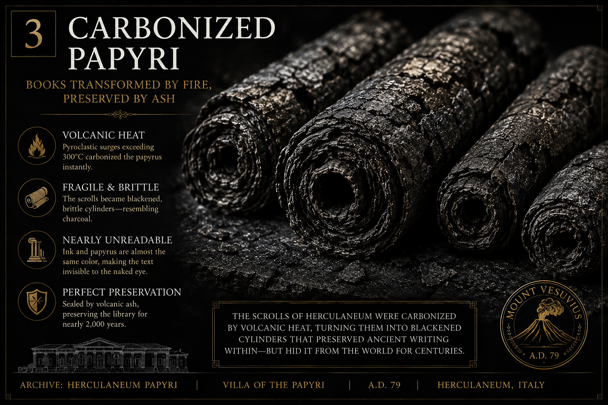

Volume I · Issue I
The Return
of the Invisible
An inaugural gathering on the instruments, traditions, and buried texts through which the unseen enters history.
- Featured essays
- 03
- Archive currents
- 04
- Edition
- Inaugural

From the Current Issue
Three passages into instruments, recovered memory, and the arts of hidden knowledge.

Obsidian: The Black Mirror of Dark Luminosity
A volcanic stone becomes blade, oracle, shadow, and one of humanity's oldest disciplines of seeing.

The Bronze Oracle of Pergamon
Fate, magic, and the ancient machine of hidden signs.

Herculaneum
The buried library beneath Vesuvius and the reawakening of an ancient mind.
From the Living Archive
Older maps, elemental studies, and sacred histories in conversation with the present issue.


The Third Lamp
A journal for the long memory
Between the publisher's book and the scholar's notebook lies a more immediate vessel. The Third Lamp gathers serious essays, visual archives, sacred history, and living traditions into a digital magazine built for contemplation rather than haste.
Receive New IssuesThe Open Gate